Ujaval Gandhi
Ujaval GandhiPravljenje mape (QGIS3)¶
Često je potrebno kreirati mapu koja se može štampati ili objaviti. QGIS ima moćan alat pod nazivom Print Layout koji vam omogućava da uzmete svoje GIS slojeve i upakovate ih da biste kreirali mape.
Pregled zadataka¶
U ovom tutorijalu je prikazano kako se kreira mapa Japana sa standardnim elementima mape kao što su umetak mape, mreže, strelica za sever, skala i oznake.
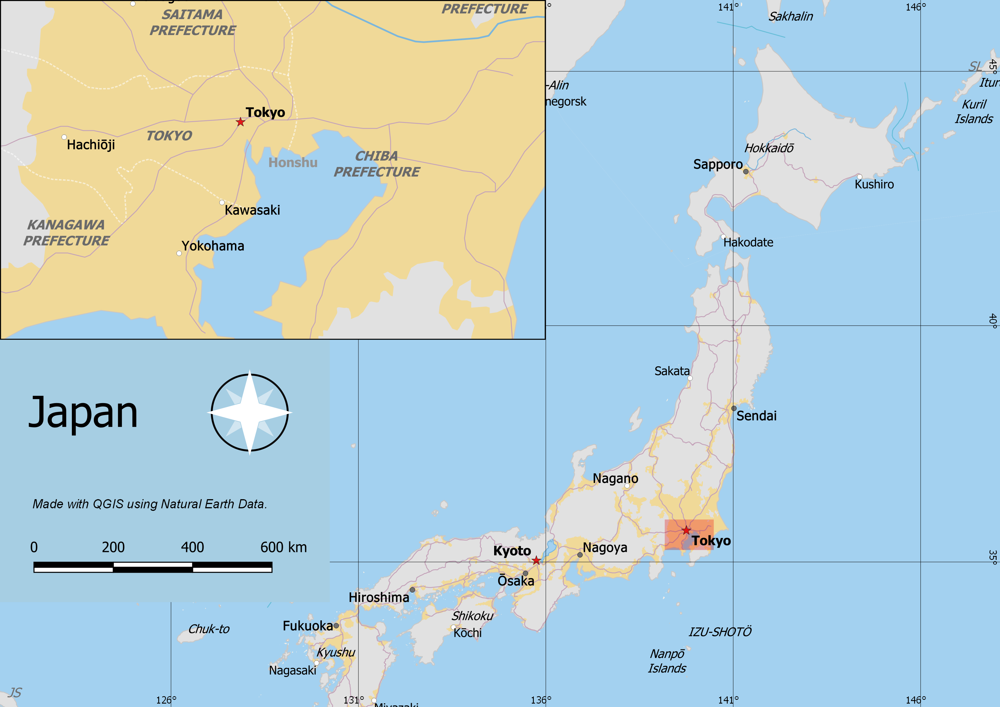
Druge veštine koje ćete naučiti¶
Kako pregledati i promeniti promenljive QGIS projekta
Kako koristiti QGIS izraze
Dobijte podatke¶
Koristićemo skup podataka Natural Earth - tačnije Natural Earth Quick Start Kit koji dolazi sa prelepo stilizovanim globalnim slojevima koji se mogu direktno učitati u QGIS.
Preuzmite Komplet za brzi početak rada sa Natural Earth. Ako link za preuzimanje ne radi, preuzmite ga direktno sa stranice Preuzimanja sa Natural Earth.
Izvor podataka [NATURALEARTH]
Procedura¶
Preuzmite i izvucite podatke iz kompleta za brzi početak rada sa Natural Earth. Otvorite QGIS. Pronađite fasciklu „Natural Earth quick start“ u panelu Browser. Proširite fasciklu da biste pronašli projekat
Natural_Earth_quick_start_for_QGIS_v3. Ovo je datoteka projekta koja sadrži stilizovane slojeve u QGIS formatu dokumenta. Dvaput kliknite na projekat da biste ga otvorili.
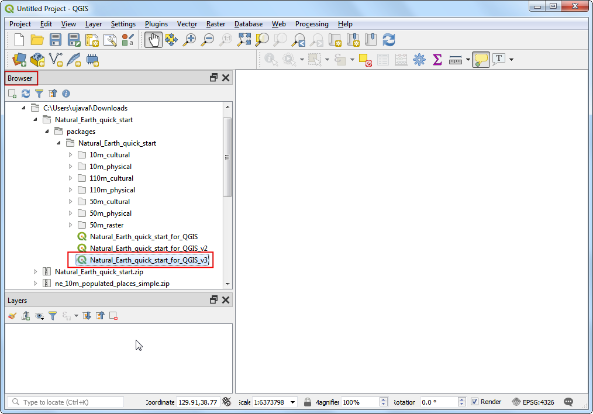
Белешка
Ako se pojavi iskačući dijalog pod nazivom Rukuj nedostupne slojeve, kliknite na dugme Automatsko pretraživanje, a zatim na Primeni izmene da biste ispravili grešku.
Ako je vaša mapa na željenom jeziku, možete preći na korak 4. Ako nije, možete promeniti jezik oznaka. Ovaj projekat koristi promenljive za podešavanje jezika. Promenljive možemo promeniti tako što ćemo otići na .
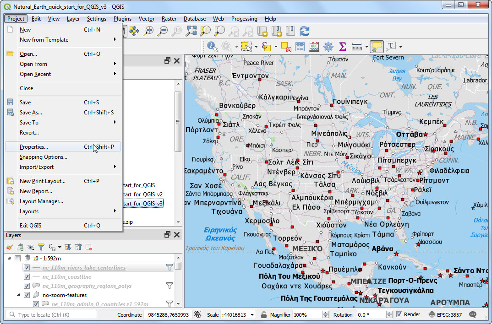
Белешка
Promenljive projekta su odličan način za čuvanje vrednosti specifičnih za projekat za upotrebu bilo gde gde možete da koristite izraz u QGIS-u. Projekat Natural_Earth_quick_start_for_QGIS_v3 dolazi sa mnogim unapred podešenim promenljivim koje se koriste za stilizovanje unutar tog projekta.
Pređite na karticu Variables u dijalogu Project Properties. Pronađite promenljivu
project_languagei kliknite na kolonu Value da biste je izmenili. Promenite jezik uname_eni kliknite na OK.

Nazad u glavnom prozoru QGIS-a, kliknite na dugme Osveži u Traci sa alatkama za navigaciju mape. Sada ćete videti mapu prikazanu sa engleskim oznakama.
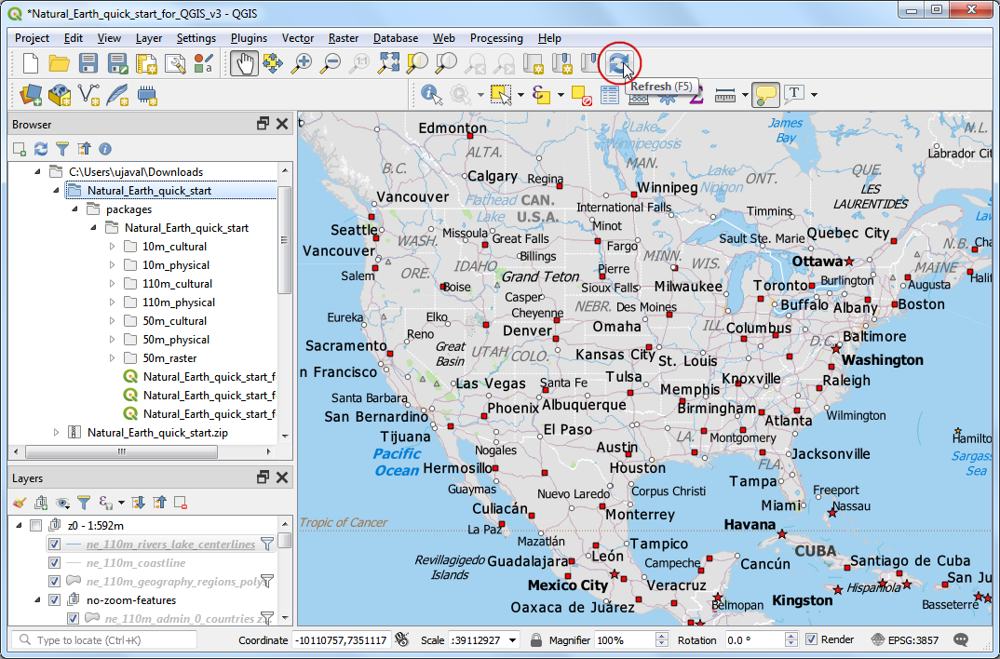
Koristite kontrole za pomeranje i zumiranje u Traci sa alatkama za navigaciju mape i zumirajte na Japan.
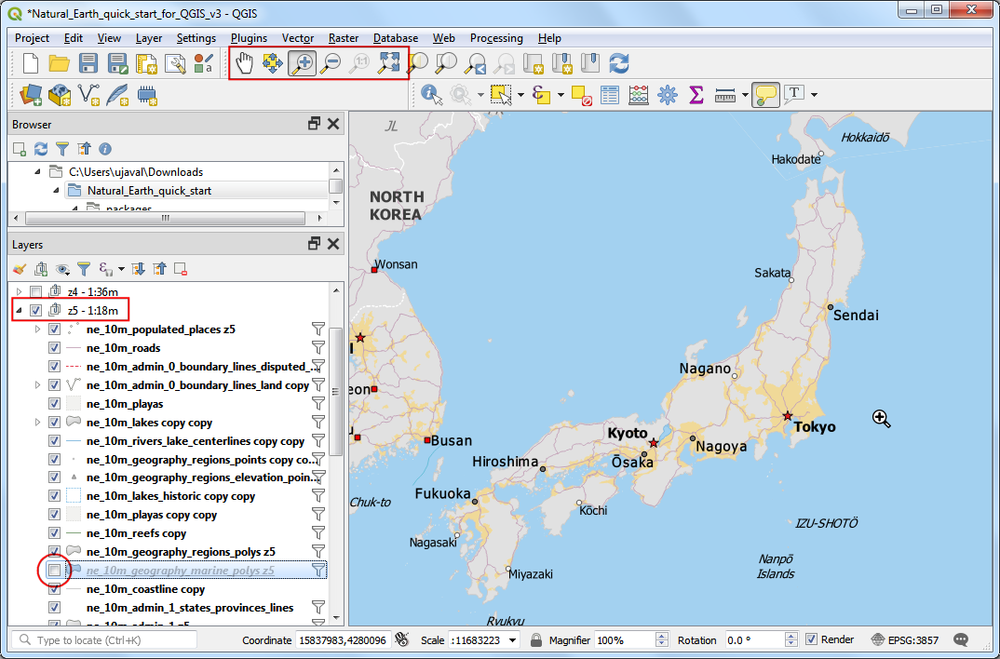
Možete isključiti neke slojeve mape za podatke koji nam nisu potrebni za ovu mapu. Proširite fasciklu
z5 - 1:18mi opozovite izbor u polju pored slojevane_10m_geography_marine_polysine_10m_admin_0_disputed_areas. Pre nego što napravimo mapu pogodnu za štampanje, potrebno je da izaberemo odgovarajuću projekciju. Podrazumevani CRS za projekat je podešen naEPSG:3857 Pseudo-Mercator. Ovo je CRS koji se popularno koristi za veb mapiranje i pristojan je izbor za našu svrhu, tako da ga možemo ostaviti na podrazumevanoj vrednosti. Idite na .
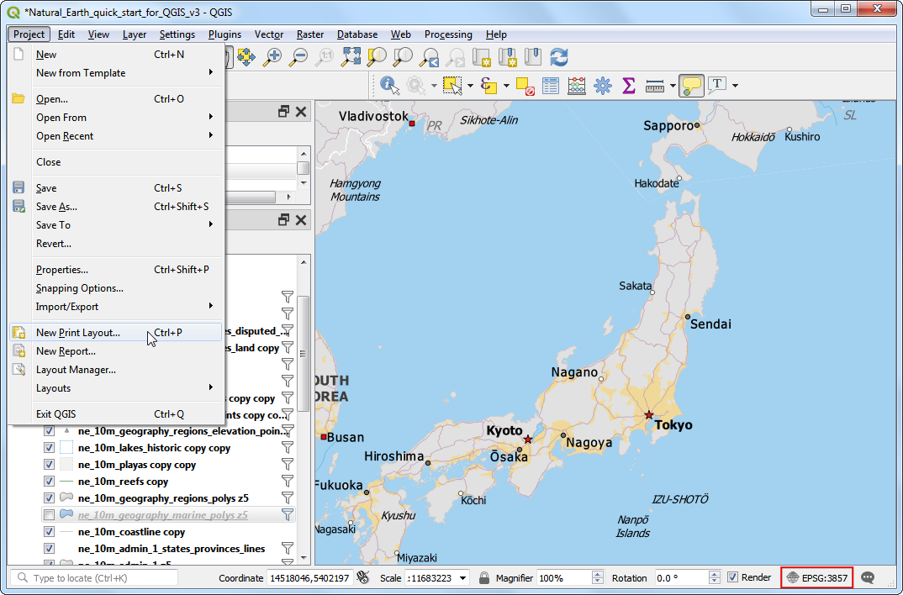
Белешка
Za Japan, Japanski ravansko-pravougaoni koordinatni sistem (JRS) je projektovani koordinatni referentni sistem - KRS koji je dizajniran za minimalna izobličenja. Podeljen je u 18 zona i ako radite za manji region u Japanu, korišćenje ovog KRS-a će biti bolje.
Bićete zamoljeni da unesete naslov za raspored. Možete ga ostaviti praznim i kliknuti na U redu.

Белешка
Ako ostavite ime rasporeda prazno, dodelićete podrazumevano ime kao što je „Raspored 1“.
U prozoru za štampanje, kliknite na dugme Zumiraj u punom obimu da biste prikazali raspored u punom obimu.
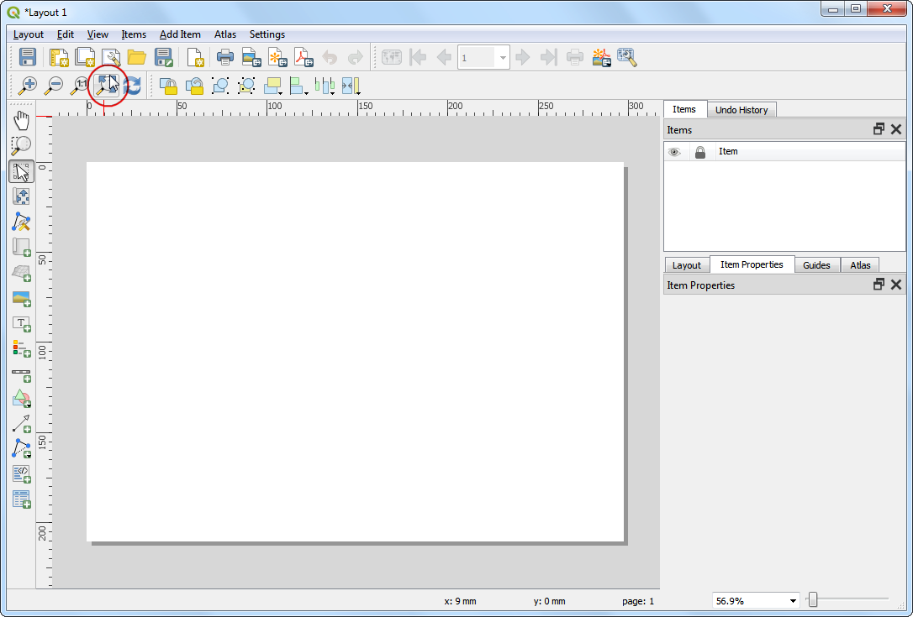
Sada bismo morali da prenesemo prikaz mape koji vidimo u QGIS platnu na raspored. Idite na .
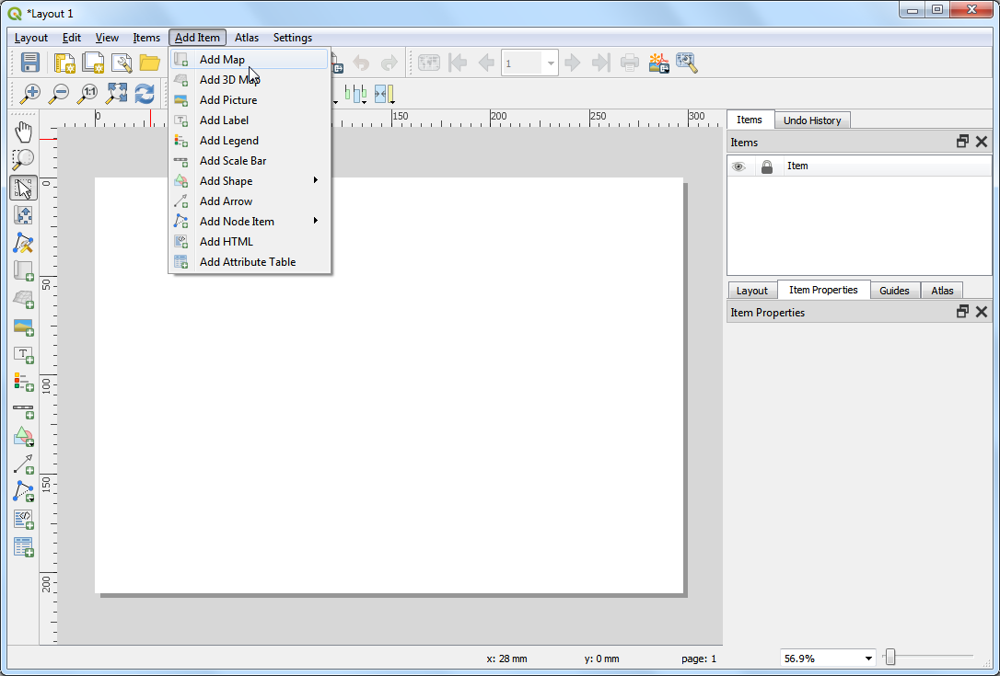
Kada je režim Dodaj mapu aktivan, držite levi taster miša i prevucite pravougaonik gde želite da umetnete mapu.
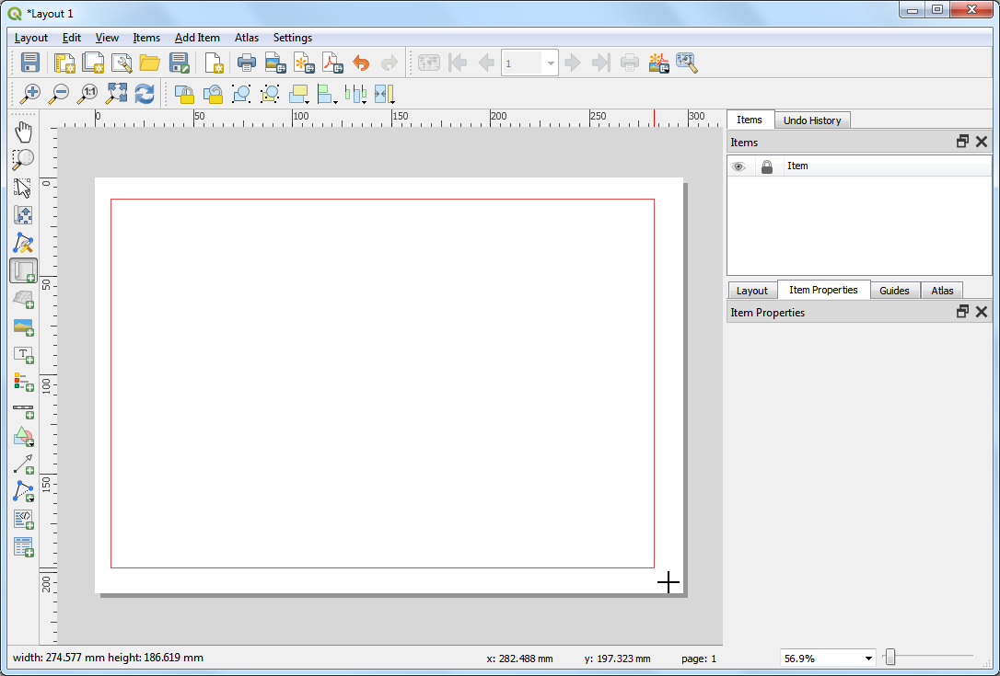
Videćete da će pravougaoni prozor biti prikazan sa mapom iz glavnog QGIS platna. Prikazana mapa možda ne pokriva puni obim područja koje nas zanima. Koristite opcije i da biste pomerili mapu u prozoru i centrirali je u kompozitoru.
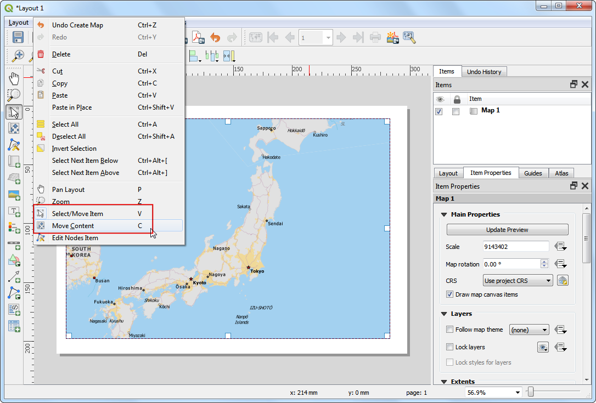
Takođe ćemo podesiti nivo zumiranja za mapu. Kliknite na karticu Svojstva stavke i unesite
10000000kao vrednost Razmera.
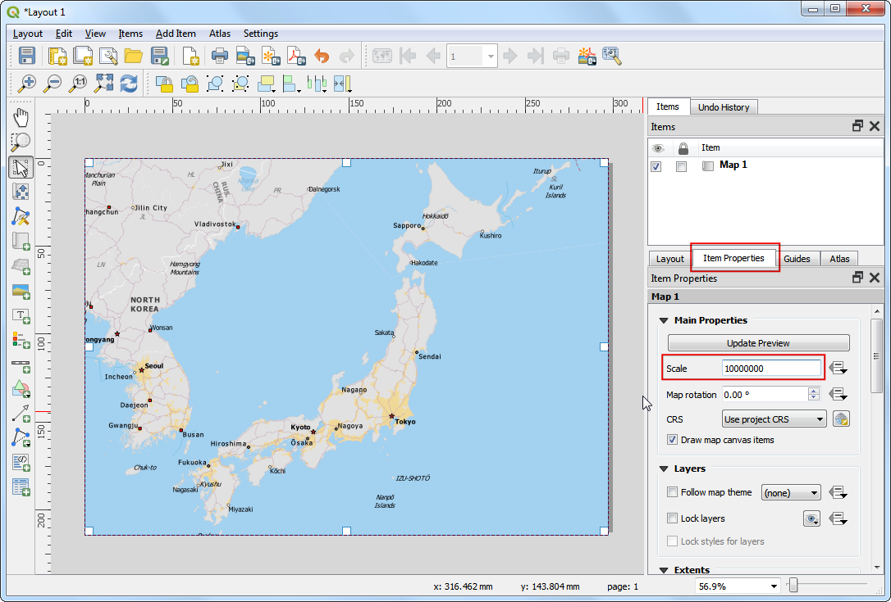
Sada ćemo dodati umetak mape koji prikazuje uvećani prikaz područja Tokija. Pre nego što napravimo bilo kakve izmene na slojevima u glavnom QGIS prozoru, označite polja Zaključaj slojeve i Zaključaj stilove za slojeve. Ovo će osigurati da se ovaj prikaz neće promeniti ako isključimo neke slojeve ili promenimo njihove stilove.
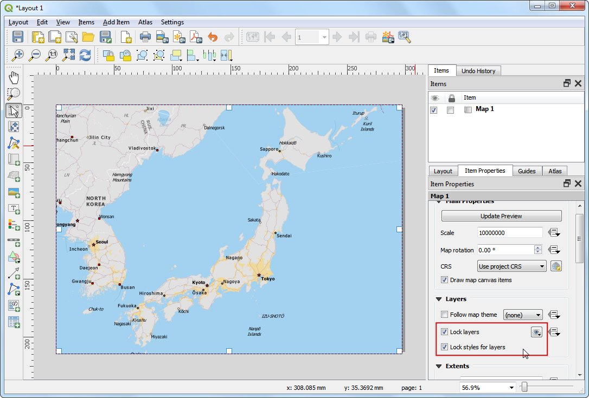
Prebacite se na glavni QGIS prozor. Isključite grupu slojeva
z5 - 1:18mi aktivirajte grupuz7 - 1:4m. Ova grupa slojeva ima stil koji je prikladniji za uvećani prikaz. Koristite kontrole za pomeranje i zumiranje u Traci sa alatkama za navigaciju mape i zumirajte oko Tokija.
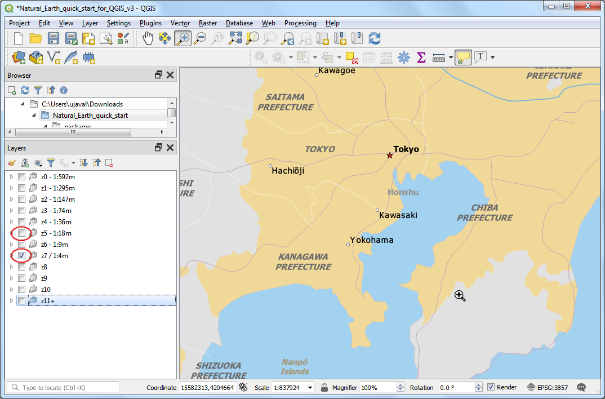
Sada smo spremni da dodamo umetak mape. Prebacite prozor Raspored štampanja. Idite na .
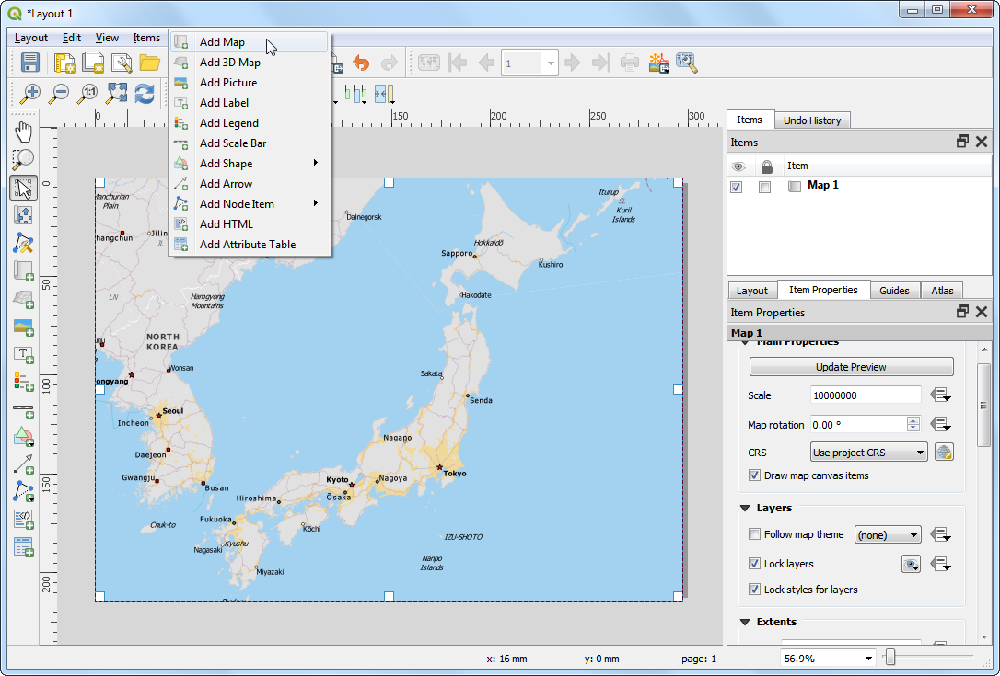
Prevucite pravougaonik na mesto gde želite da dodate umetak mape. Sada ćete primetiti da imamo 2 objekta mape u rasporedu za štampanje. Prilikom pravljenja izmena, uverite se da ste izabrali ispravnu mapu.
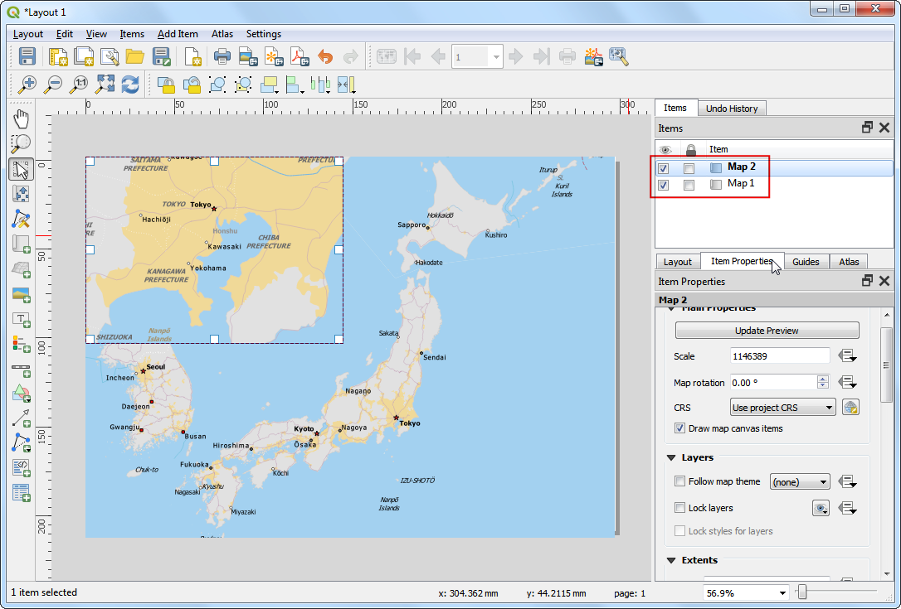
Izaberite objekat „Mapa 2“ koji smo upravo dodali iz panela Stavke. Izaberite karticu Svojstva stavke. Pomerite se nadole do panela Okvir i označite polje pored njega. Možete promeniti boju i debljinu ivice okvira kako bi se lako razlikovao u odnosu na pozadinu mape.
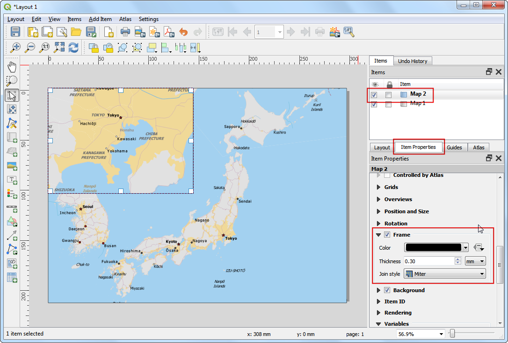
Jedna lepa karakteristika rasporeda za štampanje je da može automatski da istakne područje sa glavne mape koje je predstavljeno u umetku. Izaberite objekat „Mapa 1“ iz panela Stavke. Na kartici Svojstva stavke, skrolujte nadole do odeljka Pregledi. Kliknite na dugme Dodaj novi pregled.

Izaberite „Mapa 2“ kao :guilabel:„Okvir mape“. Ovo govori rasporedu za štampanje da istakne trenutni objekat „Mapa 1“ sa obimom mape prikazanim u objektu „Mapa 2“.
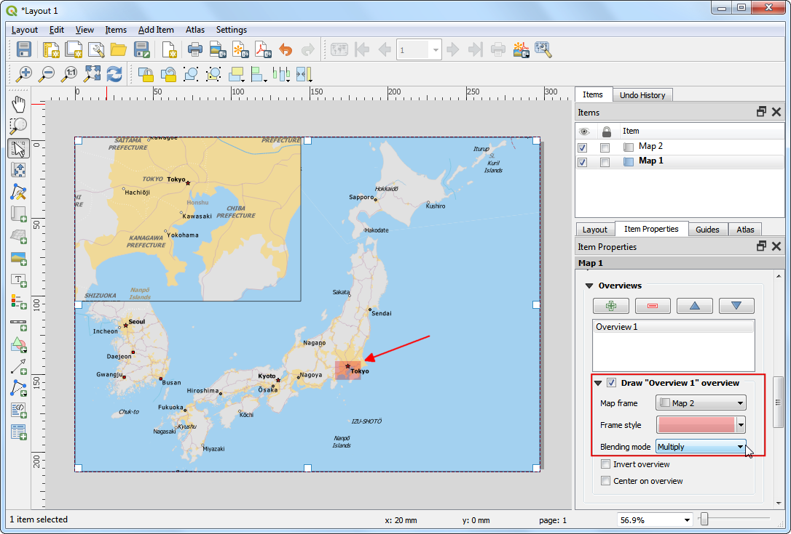
Sada kada je umetak mape spreman, dodaćemo mrežu na glavnu mapu. Izaberite objekat „Mapa 1“ iz panela :guilabel:„Stavke“. U kartici :guilabel:„Svojstva stavke“, skrolujte nadole do odeljka :guilabel:„Mreže“. Kliknite na dugme :guilabel:„Dodaj novu mrežu“, a zatim na :guilabel:„Izmeni mrežu…“.
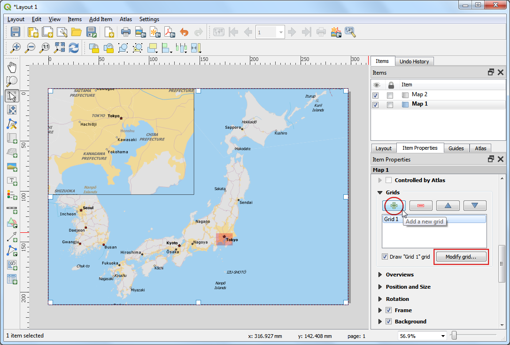
Podrazumevano, linije mreže koriste iste jedinice i projekcije kao i trenutno izabrane projekcije karte. Međutim, uobičajenije je i korisnije prikazivati linije mreže u stepenima. Možemo odabrati drugi CRS za mrežu. Kliknite na dugme Promeni… pored CRS.
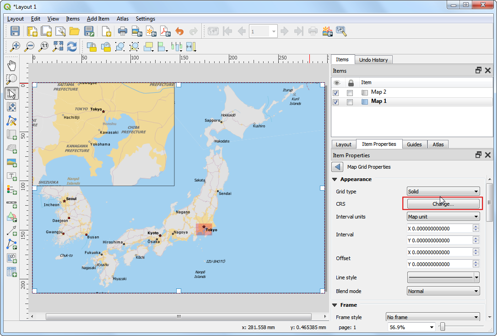
U dijalogu Coordinate Reference System Selector, unesite
4326u polje Filter. Iz rezultata izaberiteWGS84 EPSG:4326kao CRS. Kliknite na OK.
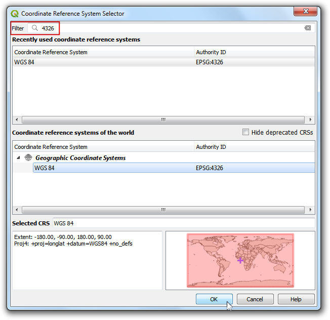
Izaberite vrednosti Interval kao
5stepeni u oba pravca X i Y. Možete podesiti Offset da biste promenili gde se pojavljuju linije mreže.
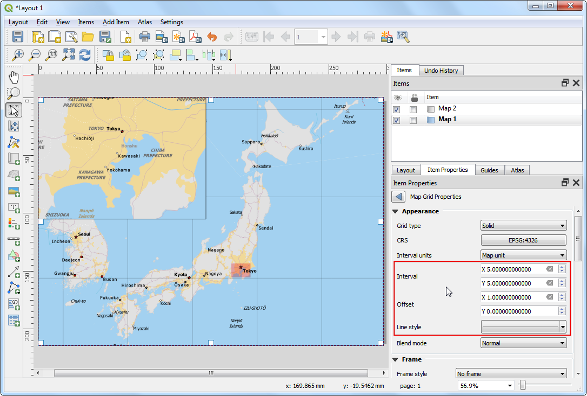
Pomerite se nadole do odeljka Grid frame i označite polje Draw coordinates. Podrazumevani format je
Degrees, ali se prikazuje kao broj. Možemo ga prilagoditi dodavanjem simbola °. IzaberiteCustomi kliknite na dugme Expression pored njega.
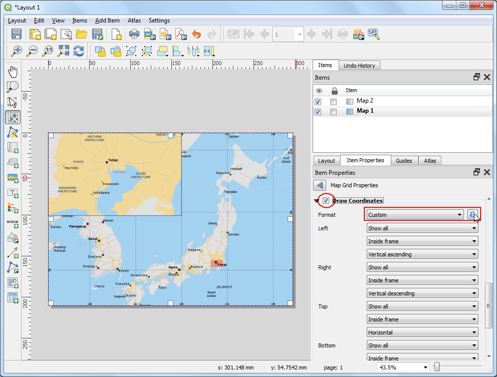
Unesite sledeći izraz da biste kreirali string koji uzima broj mreže i dodaje mu simbol |stepen|.
concat(to_string(@grid_number), '° ')
Obratite pažnju da mreže sada imaju prilagođenu oznaku iz izraza. Prilagodite podešavanja položaja za Left, Right, Gore i Bottom prema svojoj želji.
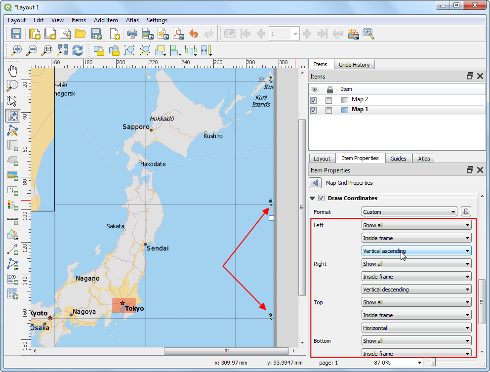
Sada ćemo dodati pravougaoni okvir da bismo sadržali ostale elemente mape kao što su strelica severa, razmera i oznaka. Idite na: izbor menija: Dodaj stavku –> Dodaj oblik –> Dodaj pravougaonik.
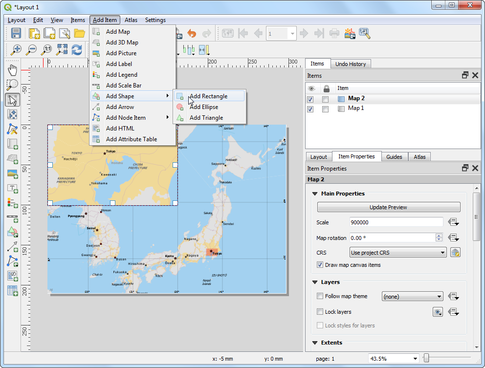
Možete promeniti Stil pravougaonika da bi se podudarao sa pozadinom mape.

Sada ćemo dodati severnu strelicu na mapu. QGIS dolazi sa lepom kolekcijom slika vezanih za mape - uključujući mnoge vrste severnih strelica. Kliknite na .

Držeći levi taster miša, nacrtajte pravougaonik. Na desnoj tabli kliknite na karticu Svojstva stavke i izaberite odeljak SVG slika i pomerite se nadole da biste pronašli strelice iz SVG grupe. Izaberite sliku koja vam se sviđa.
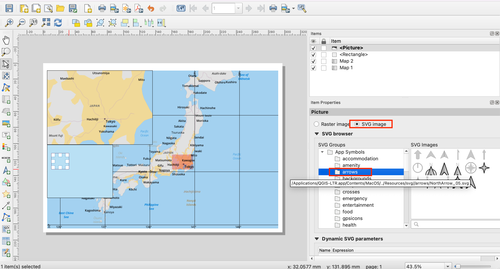
Sada ćemo dodati traku skaliranja. Kliknite na .

Kliknite na raspored gde želite da se pojavi traka skaliranja. U kartici Svojstva stavke, uverite se da ste izabrali ispravan element mape
Mapa 1za koji želite da prikažete traku skaliranja. Izaberite stil koji odgovara vašim zahtevima. U panelu Segmenti, promenite Fiksna širina na200jedinica i podesite segmente po svojoj želji.
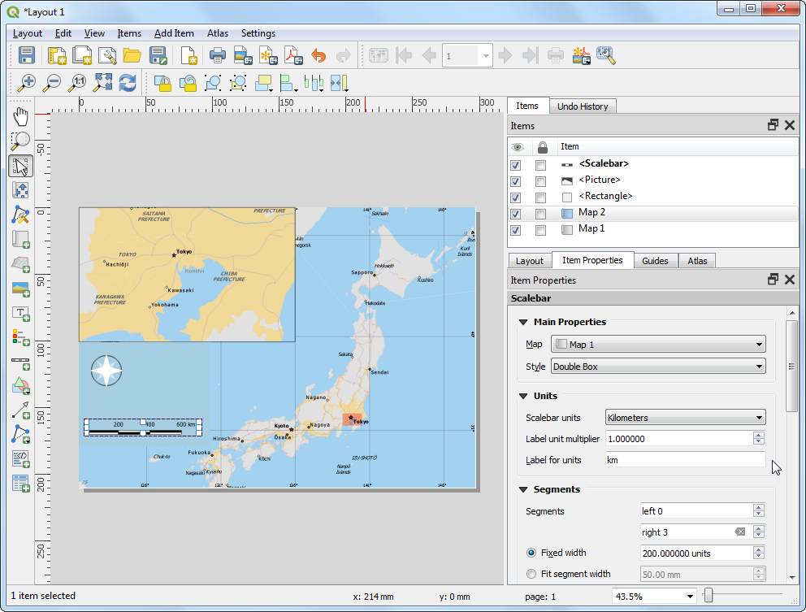
Vreme je da označimo našu mapu. Kliknite na .
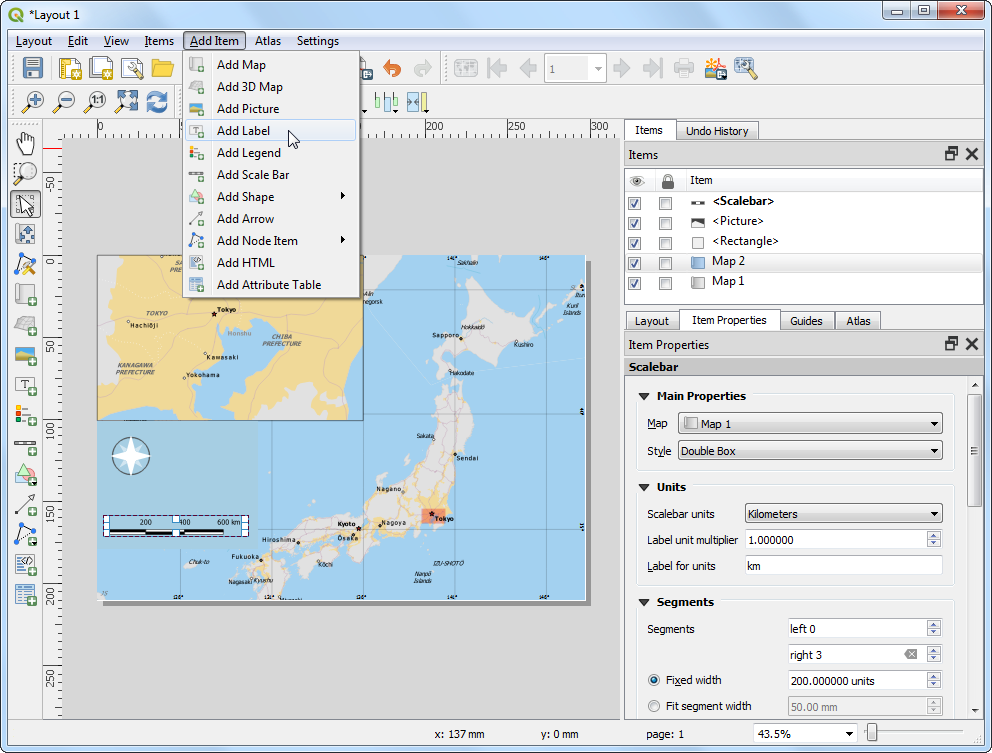
Kliknite na mapu i nacrtajte okvir tamo gde bi trebalo da bude oznaka. U kartici Svojstva stavke, proširite odeljak Oznaka i unesite oznaku za mapu. Slično tome, dodajte još oznaka za podatke i softverske zasluge.

Kada ste zadovoljni mapom, možete je eksportovati kao sliku, PDF ili SVG. Za ovaj tutorijal, hajde da je eksportujemo kao sliku. Kliknite na .
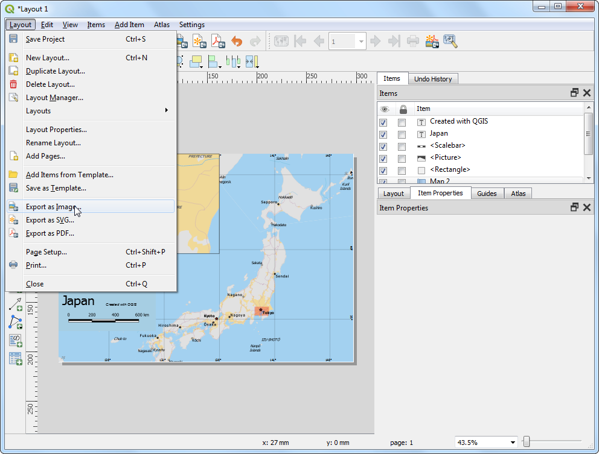
Sačuvajte sliku u formatu koji vam odgovara. Ispod je izvezena PNG slika.
If you want to give feedback or share your experience with this tutorial, please comment below. (requires GitHub account)